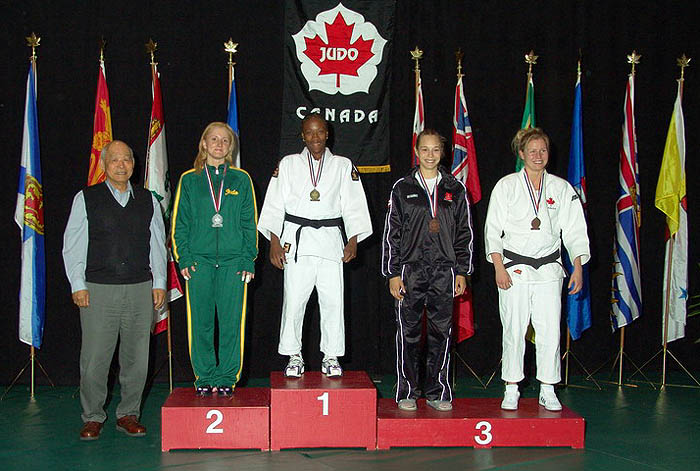
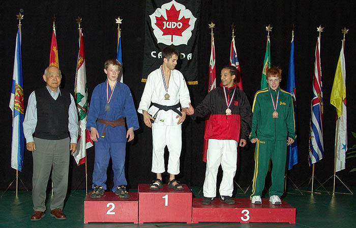
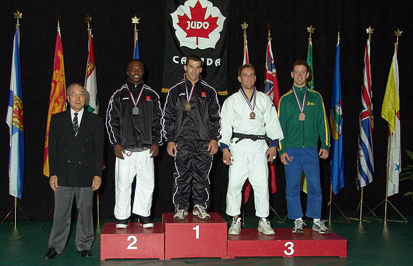

|  | Women's 57 Kg winners
Gold-Francoise Nguele (ON ) Silver-Kimberly Hardie (SK) Bronze 1-Joliane L. Melancon (QC) Bronze 2-Aneta Mozdzen (ON) |
|  | Men's 55 Kg winners
Gold-Julien Paradis (QC) Silver-Serge Zamotine (AB) Bronze 1-Djaouard Meddane (QC) Bronze 2-Jeremy Williams (SK) |
|  | Men's 73 Kg Winners
Gold-Stephane Chretien (QC ) Silver-Miguel Ngombi-Oniangue (QC) Bronze 1-Daniel Irvine (SK) Bronze 2-Slava Rogov (ON) |